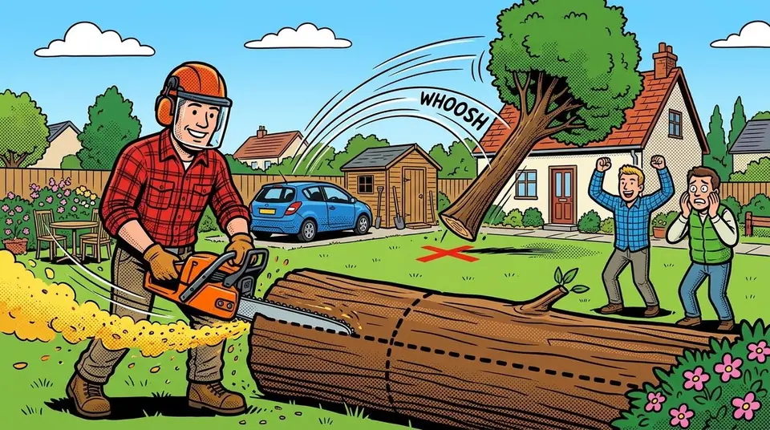

BûcheronsAbattez votre arbre sans rien écraser

Concours de bûcherons, tronçonneuse en main : vu du dessus, choisissez où tombe votre arbre sans rien écraser, puis abattez-le comme un vrai, en suivant les pointillés : les deux coupes de l'entaille, puis le trait d'abattage. Plus les coupes sont droites, plus l'arbre tombe là où vous l'avez décidé, et viser une ouverture étroite rapporte un gros bonus. Écraser une maison, une voiture ou un autre arbre élimine. Trois manches de plus en plus dures, tout le monde joue en même temps.
Jouer à BûcheronsLes commandes
- Sur téléphone : 1. Touchez le jardin pour choisir où tombe l'arbre, puis validez. 2. Sciez en suivant les pointillés : l'entaille d'un seul geste, puis le trait d'abattage.
- Sur ordinateur : Tout à la souris (cliquer et glisser), ou au clavier : ← → viser, Entrée valider, Espace scier, ↑ ↓ corriger.
L'astuce
Ne rien écraser ! Une coupe bâclée envoie l'arbre n'importe où, parfois même en arrière. Viser une ouverture étroite, ou tomber au ras d'un obstacle avec une coupe propre, rapporte un gros bonus.
Comment jouer à plusieurs
Ouvrez Baston Arcade, choisissez « Jouer à plusieurs » puis « Créer un salon ». Vos amis scannent le QR code ou tapent le code du salon sur leur téléphone. Pas de compte, pas d'application à installer, pas de publicité. Seul, vous jouez contre des robots.